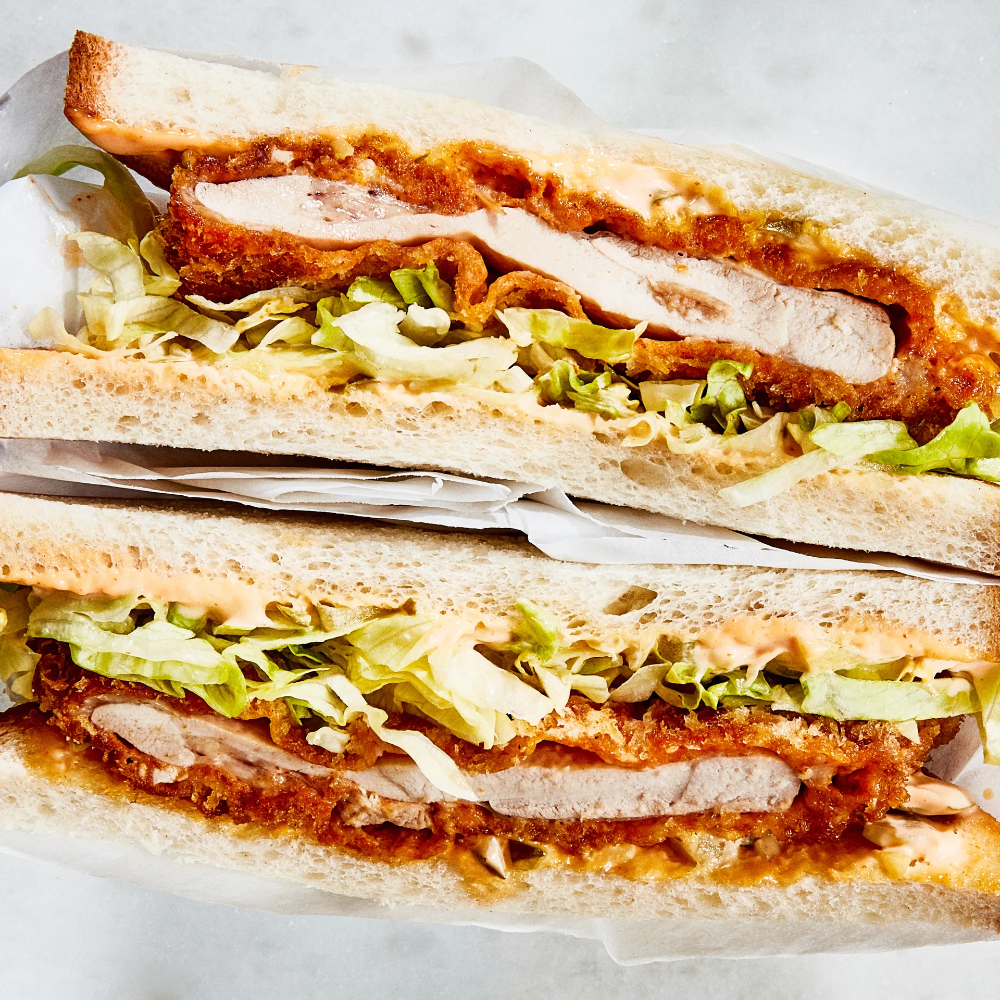

Spicy Chicken Katsu

These sandwiches combine the shattering panko crispiness of katsu-style
cutlets and the fiery heat found in Nashville-style hot chicken with some
cooling shredded lettuce to put out the fire.
Ingredients:
- 1/2 cup mayonnaise
- 1/4 cup chopped bread-and-butter pickles
- 2 Tbsp. plus 1/4 cup hot sauce, such as Crystal
- 1 tsp. kosher salt, plus more
- 1/2 cup all purpose flour
- 3 Tbsp. cayenne pepper
- 2 tsp. garlic powder
- 1 large egg
- 2 cups panko (Japanese breadcrumbs)
- 4 skinless, boneless chicken thighs, lightly pounded to 1/2" thick
- 8 slices milk bread
Instructions:
- Sauce:
- Combine matyonnaise, pickles and 2 Tbsp hot sauce in a small bowl.
Season with salt; set aside.
- Preparing the Chicken:
- Combine flour, cayenne, garlic powder, and remaining 1 tsp. salt
in a medium bowl.
- Whisk egg and remaining 1/4 cup hot sauce in another medium bowl.
- Place panko on a large plate.
- Working one at a time, dip chicken into flour dredge, turning to coat.
- Shake off any excess
- Dip into egg mixture until coated, shaking off excess.
- Dredge in panko, turning to coat.
- Transfer to a large plate or small bowl
- Cooking the Chicken:
- Heat oil in a large skillet over medium-high until shimmering.
- Working in 2 batches, cook chicken
- Reduce heat to medium if it's browning too quickly
- Cook until goldfen and very crisp on both sides,
about three minutes per side.
- Transfer to wire rack.
- Plating:
- Spread reserved spicy mayo on one side of each slice of bread.
- Top with chicken and shredded lettuce.
- Close sandwich.
- Serve with plenty of dressing on the side.
Back to Home
Next course!